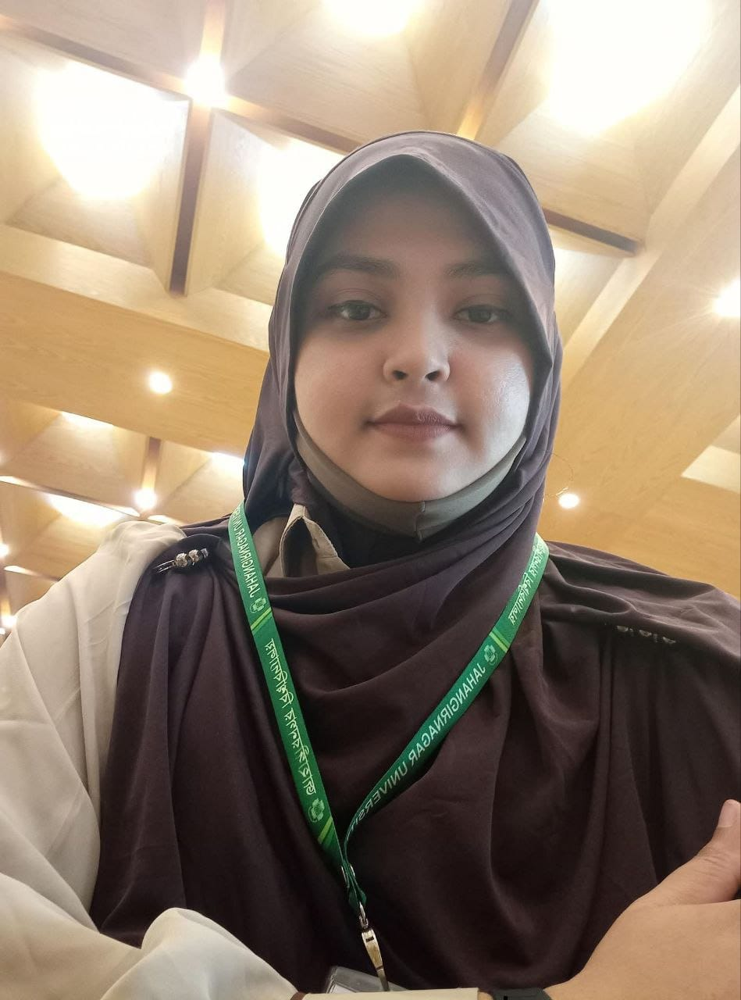

Department of Computer Science & Engineering, Jahangirnagar University
📍 Savar, Dhaka, Bangladesh | 📞 +8801750009402 (WhatsApp)
✉️ 20220655000nusaiba@juniv.edu | maimunajucse31@gmail.com
I am a final-year Computer Science & Engineering student at Jahangirnagar University specializing in Artificial Intelligence, Natural Language Processing (NLP), Full-Stack Software Engineering, Embedded Robotics, and Inclusive UI/UX Design. My research and engineering work focuses on deep learning model compression (pruning, quantization, and knowledge distillation) for edge hardware, explainable machine learning for healthcare diagnostics, modular MVC web applications, and national-level competitive robotics.
Python, TypeScript, JavaScript (ES6+), Java, C++, Kotlin, HTML5, CSS3, SQL
Deep Learning Optimization (Pruning, Quantization, Distillation), Explainable AI (SHAP), Natural Language Processing, NumPy, Pandas, OpenCV, scikit-image
Next.js, MVC Architecture, Jetpack Compose (Android), Java Swing, REST APIs, JUnit 5, AssertJ, WCAG 2.1/2.2 Accessibility
Line Follower Robot (LFR) Engineering, Hardware & Embedded Systems, Edge & Cloud Computing, Git/GitHub, Linux, LaTeX
Developed modular Model-View-Controller (MVC) frontend architecture and interactive question-management workflows within an Agile software engineering team. Implemented structured question categorization, exam assembly interfaces, and responsive UI components.
View Repository →Engineered an end-to-end clinical risk classification pipeline evaluating class-rebalancing methods, ensemble classifiers, and SHAP (SHapley Additive exPlanations) feature attribution for interpretable medical predictions.
View Repository →Architected and built a multi-screen native Android application following modular software design principles, declarative UI state management, and responsive navigation flows.
View Repository →Engineered a modular task scheduling web application using JavaScript (ES6+), optimizing state transitions and asynchronous data workflows.
View Repository →Designed an end-to-end management portal featuring clean, semantic structures to guarantee WCAG-aligned screen-reader accessibility.
View Repository →SS Shinwary, H Tasnim, MT Nusaiba
American Journal of Trade and Policy, 2026
MT Nusaiba (Lead Researcher) — Published, July 2026
Analyzing model pruning, quantization, and knowledge distillation to bridge execution disparities between deep learning architectures and edge hardware.
MT Nusaiba (Lead Researcher) — Published, July 2026
Synthesizing multidisciplinary literature to establish framework relationships between machine learning deployments and digital governance.
MT Nusaiba, K Devarapu, MA Jawad, H Tasnim
NEXG AI Review of America, 2026
K Rahman, MT Nusaiba, H Tasnim
Robotics Xplore, 2025
Organized & Hosted by: Bangladesh University of Business and Technology (BUBT) & IEEE BUBT Student Branch
Awarded Best Campus Ambassador at the FastRoboX 1.0 National Robotics and Tech Carnival for leading nationwide outreach, digital promotional campaigns, and inter-university participant mobilization representing Jahangirnagar University.
Team: JU_Innovators | Jahangirnagar University Robotics Club (JURC)
Organizers: UFTB Robotics Club & University of Frontier Technology, Bangladesh
Secured the 1st Runner-Up position in the Line Following Robot (LFR) segment — marking the first national-level podium achievement for the Jahangirnagar University Robotics Club (JURC). Served in a dual role: handling hardware testing, debugging, and code optimization for the LFR, while also managing planning, communication, coordination, and student mobilization as Campus Ambassador.
Jahangirnagar University
Spearheaded university-wide technology campaigns, managing developer team allocations, strategic event planning, student mobilization, and tech engagement workshops across national tech carnivals (FastRoboX 1.0, FIRSO 2026, Robofusion 1.0).
Jahangirnagar University — Savar, Dhaka, Bangladesh
Session: 2021–2022 (4th Year / Final Year Student)